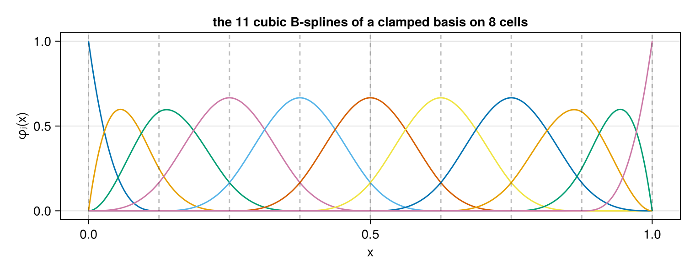
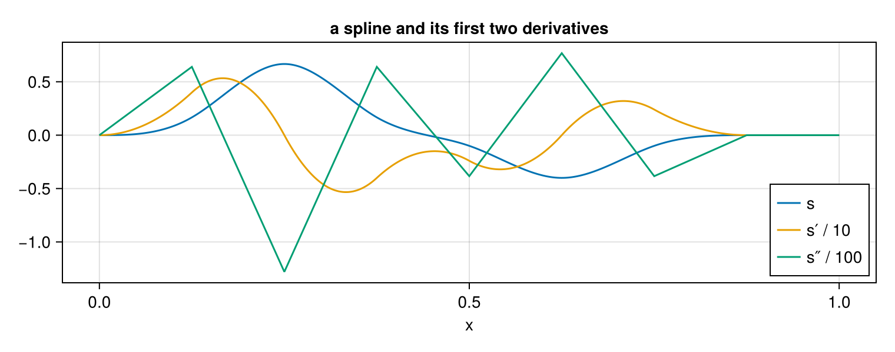
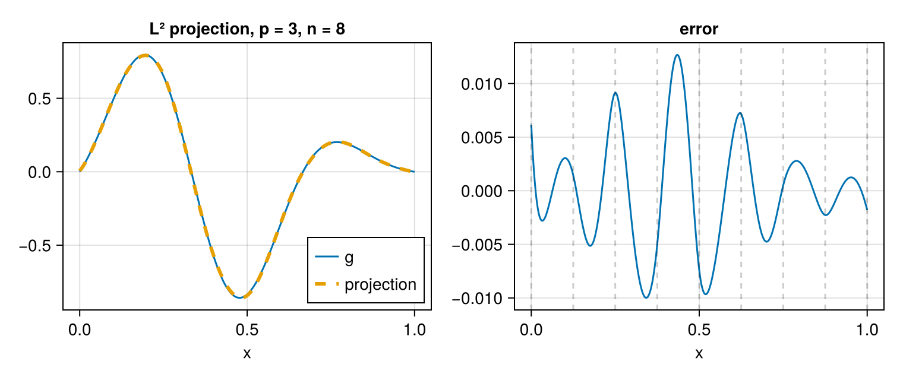
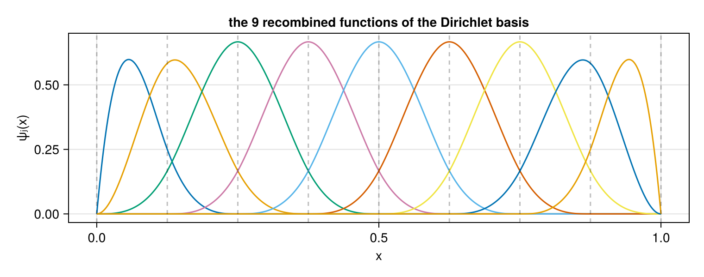
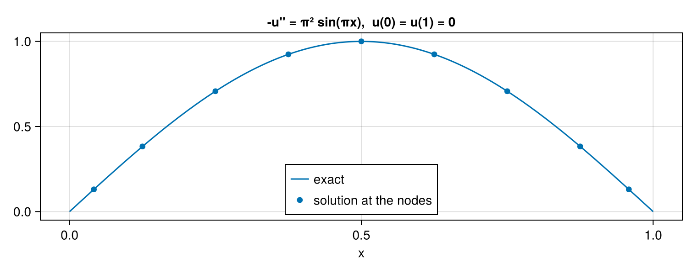
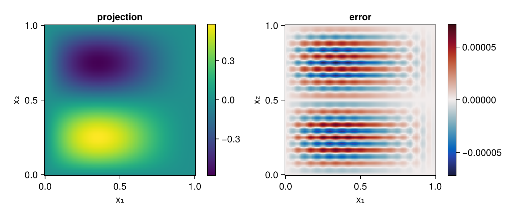

Tutorial
One example, worked from a bare using to a solved boundary-value problem. Everything on this page runs; the numbers and figures are produced when the manual is built.
using SimpleSplines
using CairoMakieA mesh
A Mesh is a subdivision of a closed interval into cells, and nothing more — it carries no degree and no boundary condition:
m = UniformMesh(8, 0 .. 1)
ncells(m), domain(m), meshwidth(m)(8, 0.0 .. 1.0, 0.125)breakpoints(m)9-element Vector{Float64}:
0.0
0.125
0.25
0.375
0.5
0.625
0.75
0.875
1.0There are n+1 breakpoints for n cells, both endpoints included. The domain may be written as an interval 0 .. 1, as a tuple (0, 1), or — the common periodic case — as a single number standing for $[0, L]$, so UniformMesh(8, 2π) is $[0, 2\pi]$.
A basis
A basis is a mesh plus a degree. With no boundary condition given it is the clamped basis, of dimension $N = n + p$:
b = BSplineBasis(m, 3)
nbasis(b), degree(b), order(b)(11, 3, 4)Basis functions are indexed b[x, j] — the point first, as for a matrix of samples — and there are p+1 of them nonzero at any point:
fig = Figure(size = (760, 300))
ax = Axis(fig[1, 1]; xlabel = "x", ylabel = "φⱼ(x)",
title = "the 11 cubic B-splines of a clamped basis on 8 cells")
xs = range(0, 1; length = 601)
for j in eachindex(b)
lines!(ax, xs, b[xs, j])
end
vlines!(ax, breakpoints(b); color = (:black, 0.25), linestyle = :dash)
fig
They are non-negative and sum to one at every point — a partition of unity — and the clamping makes the first and last interpolatory at the ends:
maximum(abs, [sum(b[x, :]) - 1 for x in xs]), b[0.0, 1], b[1.0, nbasis(b)](2.220446049250313e-16, 1.0, 1.0)A spline
A Spline is a basis together with the coefficients of one element of its span, and it is callable:
û = zeros(nbasis(b))
û[4] = 1.0
û[7] = -0.6
s = Spline(b, û)
s(0.35)0.28266666666666684A second argument is the derivative order, and derivative turns the derivative into a callable of its own so that it broadcasts:
fig = Figure(size = (760, 300))
ax = Axis(fig[1, 1]; xlabel = "x", title = "a spline and its first two derivatives")
lines!(ax, xs, s.(xs); label = "s")
lines!(ax, xs, derivative(s, 1).(xs) ./ 10; label = "s′ / 10")
lines!(ax, xs, derivative(s, 2).(xs) ./ 100; label = "s″ / 100")
axislegend(ax; position = :rb)
fig
The second derivative is piecewise linear and the third would be piecewise constant: a degree-$p$ spline is $\mathcal{C}^{p-1}$ across an interior breakpoint, so exactly p-1 derivatives are continuous.
Fitting a function
To put a given function into the space, project it. That needs a quadrature — a SplineQuadrature, which tabulates the basis and its derivatives at the Gauß-Legendre points of every cell:
q = SplineQuadrature(b)
length(quadrature_nodes(q)), sum(quadrature_weights(q))(40, 1.0)The weights sum to the length of the domain. l2_projection returns the coefficient vector:
g(x) = exp(-8 * (x - 0.35)^2) * sinpi(3x)
ĝ = l2_projection(q, g)
sg = Spline(b, ĝ)
maximum(abs(sg(x) - g(x)) for x in xs)0.012676173310203764fig = Figure(size = (760, 320))
ax1 = Axis(fig[1, 1]; xlabel = "x", title = "L² projection, p = 3, n = 8")
lines!(ax1, xs, g.(xs); label = "g")
lines!(ax1, xs, sg.(xs); linestyle = :dash, linewidth = 3, label = "projection")
axislegend(ax1; position = :rb)
ax2 = Axis(fig[1, 2]; xlabel = "x", title = "error")
lines!(ax2, xs, sg.(xs) .- g.(xs))
vlines!(ax2, breakpoints(b); color = (:black, 0.2), linestyle = :dash)
fig
Refining the mesh reduces that error at order $p+1$:
for n in (8, 16, 32, 64)
bn = BSplineBasis(UniformMesh(n, 0 .. 1), 3)
qn = SplineQuadrature(bn)
ĝn = l2_projection(qn, g)
err = maximum(abs(evaluate(bn, ĝn, x) - g(x)) for x in xs)
println("n = ", lpad(n, 2), " error = ", err)
endn = 8 error = 0.012676173310203764
n = 16 error = 0.000417093707517302
n = 32 error = 2.220187079970959e-5
n = 64 error = 1.3462647086015522e-6Imposing a boundary condition
The same construction takes a BoundaryCondition as a third argument, and returns whichever of the three bases that condition calls for:
bfree = BSplineBasis(m, 3, Free())
bdir = BSplineBasis(m, 3, Dirichlet())
bper = BSplineBasis(m, 3, Periodic())
(typeof(bfree).name.name, nbasis(bfree)),
(typeof(bdir).name.name, nbasis(bdir)),
(typeof(bper).name.name, nbasis(bper))((:BSplineBasis, 11), (:RecombinedBSplineBasis, 9), (:PeriodicBSplineBasis, 8))Dirichlet() costs one degree of freedom per end, and the condition $u(0) = u(1) = 0$ then holds for every coefficient vector — it is a property of the space, not something enforced afterwards:
using Random
Random.seed!(1234)
v̂ = randn(nbasis(bdir))
evaluate(bdir, v̂, 0.0), evaluate(bdir, v̂, 1.0)(0.0, 0.0)fig = Figure(size = (760, 300))
ax = Axis(fig[1, 1]; xlabel = "x", ylabel = "ψⱼ(x)",
title = "the 9 recombined functions of the Dirichlet basis")
for j in eachindex(bdir)
lines!(ax, xs, [evaluate(bdir, j, x) for x in xs])
end
vlines!(ax, breakpoints(bdir); color = (:black, 0.25), linestyle = :dash)
fig
Every one of them vanishes at both ends. Note that they are no longer a partition of unity: for Dirichlet recombination just drops the one function at each end that fails to vanish there, so the constants have left the space. polynomial_reproduction reports that as a number.
polynomial_reproduction.((bfree, bdir, bper))(3, -1, 0)Solving a boundary-value problem
With the boundary condition in the space, the Galerkin discretisation of $-u'' = f$ on $(0,1)$ with $u(0) = u(1) = 0$ is the linear system $\mathbb{K} \hat{u} = \mathbf{b}$, with $\mathbb{K}$ the stiffness matrix and $b_i = \int f \psi_i$:
qd = SplineQuadrature(bdir)
K = stiffness_matrix(qd)
f(x) = π^2 * sinpi(x) # so that u(x) = sin(πx)
rhs = basis_values(qd, 0) * (quadrature_weights(qd) .* f.(quadrature_nodes(qd)))
û = Matrix(K) \ rhs
uh = Spline(bdir, û)
maximum(abs(uh(x) - sinpi(x)) for x in xs)3.44424882321448e-5fig = Figure(size = (760, 300))
ax = Axis(fig[1, 1]; xlabel = "x", title = "-u'' = π² sin(πx), u(0) = u(1) = 0")
lines!(ax, xs, sinpi.(xs); label = "exact")
scatter!(ax, nodes(bdir), uh.(nodes(bdir)); label = "solution at the nodes")
axislegend(ax; position = :cb)
fig
No rows were deleted and no values were substituted into the system: the basis has one function fewer per constrained end, so K is already the matrix of the constrained problem.
Two dimensions
A tensor product is the ⊗ of one-dimensional bases, each with its own degree, mesh and boundary condition:
B = BSplineBasis(UniformMesh(12, 0 .. 1), 3, Dirichlet()) ⊗
BSplineBasis(UniformMesh(12, 0 .. 1), 3, Dirichlet())
ndims(B), size(B), degree(B)(2, (13, 13), (3, 3))Coefficients are a D-dimensional array of size size(B), and everything else follows the one-dimensional pattern:
Q = TensorProductQuadrature(B)
h(x) = sinpi(x[1]) * sinpi(2 * x[2]) * (1 - x[1])
Ĥ = l2_projection(Q, h)
size(Ĥ), maximum(abs(evaluate(B, Ĥ, (x, y)) - h((x, y)))
for x in range(0, 1; length = 41), y in range(0, 1; length = 41))((13, 13), 6.896227432939828e-5)gr = range(0, 1; length = 121)
Z = [evaluate(B, Ĥ, (x, y)) for x in gr, y in gr]
fig = Figure(size = (760, 320))
ax1 = Axis(fig[1, 1]; xlabel = "x₁", ylabel = "x₂", title = "projection", aspect = 1)
hm = heatmap!(ax1, gr, gr, Z)
Colorbar(fig[1, 2], hm)
ax2 = Axis(fig[1, 3]; xlabel = "x₁", ylabel = "x₂", title = "error", aspect = 1)
he = heatmap!(ax2, gr, gr, Z .- [h((x, y)) for x in gr, y in gr]; colormap = :balance)
Colorbar(fig[1, 4], he)
fig
The mass matrix of that basis is never assembled: it is the Kronecker product of the two one-dimensional ones, and a solve is two sequences of one-dimensional solves.
op = mass_operator(Q)
nameof(typeof(op)), map(f -> nameof(typeof(f)), mass_factors(op)), size(op)(:KroneckerMass, (:BandedMass, :BandedMass), (169, 169))Where to go next
- The mathematics: B-Splines, Boundary Conditions, Tensor Products.
- The details of each object, its keyword arguments and its traps: Meshes, Bases, Boundary Conditions, Assembly, Tensor Products, Splines.
- More solved problems, with convergence rates: Gallery.